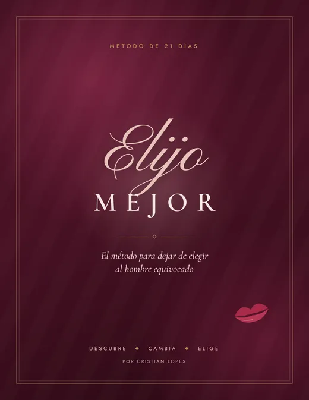
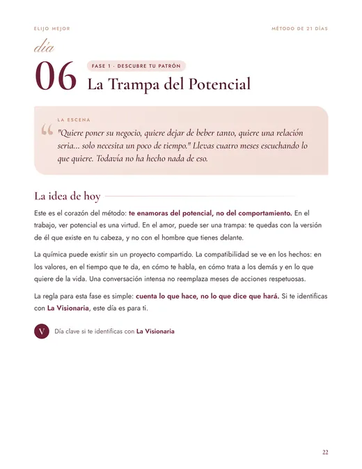
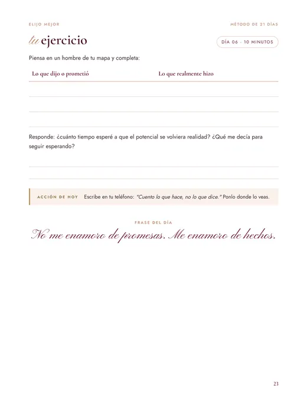
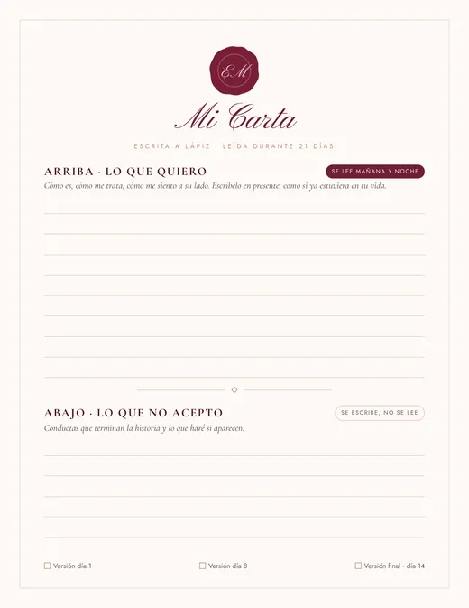
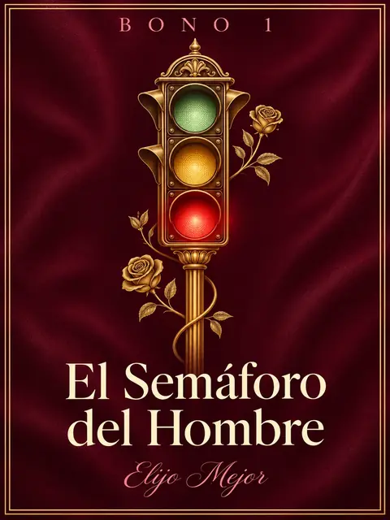
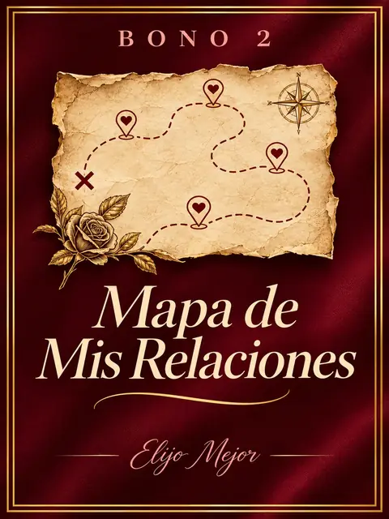
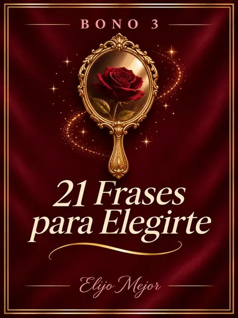
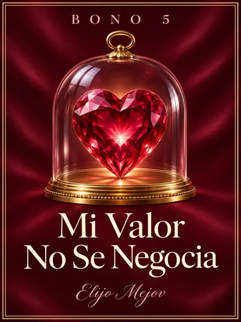
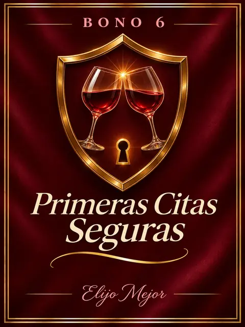

Para mujeres que saben tomar decisiones difíciles… pero en el amor siguen dando oportunidades que no darían en ningún otro lugar.
Deja de enamorarte de lo que promete. Empieza a elegir por lo que demuestra.
No necesitas aprender a conquistar a otro hombre. Necesitas dejar de invertir tu corazón en una versión de él que todavía no existe.
Descubre Elijo Mejor: un método práctico de 21 días para reconocer los patrones que pueden estar repitiéndose en tu vida amorosa, identificar señales antes de involucrarte demasiado y construir tu propio filtro para elegir relaciones con más claridad.
Sin juegos psicológicos. Sin perseguir a nadie. Sin tener que convertirte en una mujer diferente para merecer amor.
Lo peor no es que él vuelva a decepcionarte.
Lo peor es recordar todas las veces que sentiste que algo no estaba bien… y decidiste esperar.
Son las 11:43 de la noche.
Mañana tienes un día importante.
Pero tu atención está en una pantalla.
Otra vez.
Él dijo que te llamaría. No llamó.
Viste que estuvo conectado.
Y ahora estás intentando encontrar una explicación que no te haga sentir rechazada.
«Quizás está ocupado».
«No quiero presionarlo».
«Tal vez estoy exagerando».
«Cuando resuelva sus problemas, las cosas serán diferentes».
Y así comienza otra negociación silenciosa contigo misma.
Porque hay algo que no termina de encajar.
La mujer que sabe resolver problemas enormes durante el día puede terminar dedicando toda la noche a interpretar un mensaje de tres palabras.
No porque sea débil.
No porque le falte inteligencia.
Sino porque cuando alguien nos importa, a veces confundimos lo que esperamos de esa persona con lo que realmente está ofreciendo.
Y eso puede costar mucho más que una noche sin dormir.
Puede costarte meses esperando claridad.
Años dando oportunidades.
Y una parte de tu tranquilidad intentando hacer funcionar algo que necesita la voluntad de dos personas.
Pero existe una pregunta que puede cambiar la perspectiva:
¿Estás enamorada del hombre que tienes delante… o de la historia que imaginas que podrías vivir con él?
Hay cuatro formas de quedarse atrapada en la misma historia.
No son diagnósticos ni etiquetas definitivas. Son patrones que puedes aprender a reconocer.
La Visionaria
Se enamora del futuro. Convive con las decepciones del presente.
Él tiene grandes planes. Habla de todo lo que quiere conseguir. Te cuenta cómo será su vida cuando cambie de trabajo, supere sus problemas o finalmente esté listo para una relación.
Y tú ves lo que podría llegar a ser.
El problema aparece cuando empiezas a relacionarte con ese futuro en lugar de evaluar lo que está sucediendo hoy.
«Sé que tiene mucho potencial».
La pregunta que cambia el filtro: ¿qué hace hoy para construir la relación que dice querer?
La Reparadora
Confunde acompañar con hacerse responsable.
Sabes escuchar. Sabes encontrar soluciones. Sabes sostener a otros en los momentos difíciles.
Pero en algunas relaciones puedes terminar dando tanto que olvidas preguntarte qué estás recibiendo.
Comprendes sus heridas, justificas sus ausencias y encuentras motivos para seguir esperando.
«Conmigo será diferente».
La pregunta que cambia el filtro: ¿estamos construyendo una relación entre dos adultos o estoy intentando resolver su vida?
La Intensa
La incertidumbre se parece tanto a la emoción que cuesta distinguirlas.
Cuando él aparece, todo parece extraordinario. Cuando desaparece, la cabeza no descansa. Y cada regreso trae un alivio que puede confundirse con una conexión especial.
Mientras tanto, una persona consistente, disponible y clara quizá no provoque esa misma montaña rusa emocional.
«Nunca sentí algo así».
La pregunta que cambia el filtro: ¿esta conexión me permite sentirme tranquila y respetada, además de emocionada?
La Generosa
Da tantas oportunidades que sus necesidades empiezan a desaparecer.
No quieres ser exigente. No quieres pedir demasiado. Sabes comprender las dificultades de otra persona.
Pero llega un punto en el que comprenderlo todo puede convertirse en aceptar demasiado.
«No importa. Yo me adapto».
La pregunta que cambia el filtro: ¿puedo expresar lo que necesito sin sentir que pongo en riesgo la relación?
La habilidad que te ayuda a triunfar en el trabajo puede complicar tus decisiones en el amor.
En el mundo profesional, saber identificar potencial es una ventaja.
Ves oportunidades donde otros ven dificultades. Comprendes procesos. Apuestas por proyectos que todavía no están terminados. Sabes que con estrategia, trabajo y paciencia algo puede transformarse.
Pero una relación no es un proyecto de desarrollo personal que puedas completar por otra persona.
Puedes comprender sus dificultades. Puedes apoyar sus objetivos. Puedes admirar sus posibilidades.
Pero no puedes construir por los dos.
Y cuando confundes el potencial con una realidad que todavía no existe, pueden pasar cosas como estas:
La Trampa del Potencial es seguir apostando por lo que alguien podría ofrecer mientras dejas de evaluar lo que realmente ofrece.
La salida no consiste en desconfiar de todos los hombres.
Tampoco en volverte fría.
Consiste en aprender a observar sin inventar explicaciones por la otra persona.
Dejar de preguntar solamente «¿qué podríamos llegar a ser?» y empezar a preguntar «¿qué estamos construyendo realmente?».
Eso es lo que vas a practicar con Elijo Mejor.
No necesitas otros seis meses de dudas para aprender algo que puedes empezar a observar hoy.
Conoce Elijo Mejor: 21 días para construir una nueva forma de elegir.
Un cuaderno digital diseñado para transformar reflexiones que hoy tienes en la cabeza en criterios concretos que puedas consultar cuando alguien te guste.
Cada día tendrás una lectura breve y un ejercicio práctico.
Sin clases interminables. Sin fórmulas de seducción. Sin prometer controlar a otra persona.
Solo entre 10 y 15 minutos diarios para trabajar en tus propias decisiones.
Descubre lo que se repite.
Antes de cambiar tus decisiones, necesitas comprenderlas.
Revisarás situaciones de tus relaciones anteriores, identificarás comportamientos que has justificado y explorarás qué te hace permanecer en ciertas dinámicas.
Al finalizar tendrás un mapa personal de los patrones que deseas dejar de repetir.
Construye un filtro que no dependa solamente de la química.
«Quiero un hombre maduro». «Quiero que me respete». «Quiero una relación estable».
Son deseos importantes. Pero pueden significar cosas muy diferentes para cada persona.
Aprenderás a traducirlos en comportamientos observables: comunicación, consistencia, respeto, acuerdos y reciprocidad. También identificarás límites que necesitas mantener.
Al terminar tendrás Mi Filtro Personal, una hoja con tus criterios esenciales.
Aprende a utilizar tu filtro en la vida real.
Practicarás cómo observar las primeras conversaciones, qué preguntas pueden ayudarte a conocer mejor a una persona y cómo comunicar tus necesidades sin perderte en explicaciones.
También trabajarás qué hacer cuando alguien es inconsistente, no respeta un límite o busca algo diferente de lo que deseas.
Al terminar tendrás un plan personal para aplicar lo aprendido en futuras citas o en tu relación actual.




No necesitas transformarte mágicamente en 21 días.
Necesitas comenzar a tomar decisiones que respeten lo que has descubierto sobre ti.
Mi Carta: lo que deseo y lo que ya no quiero negociar.
Esta es una de las herramientas de Elijo Mejor. Tomarás un lápiz y escribirás dos cosas.
Lo que deseas encontrar en un compañero. No solamente su apariencia o sus gustos.
- Sus valores.
- Cómo se comunica.
- Cómo gestiona los desacuerdos.
- Cómo demuestra respeto, interés y compromiso.
- Cómo quieres sentirte dentro de esa relación.
Las actitudes que no deseas aceptar.
- Las promesas sin acciones.
- La falta de respeto.
- La presión sobre tus límites.
- La ausencia de reciprocidad.
- Los comportamientos incompatibles con el tipo de relación que quieres construir.
Durante 21 días podrás releer tus deseos por la mañana y por la noche, recordando las cualidades y los valores que son importantes para ti.
Los límites quedarán escritos para revisarlos cuando necesites tomar una decisión.
No es una fórmula para hacer aparecer a un hombre.
Es una herramienta para dejar de olvidar tus propios criterios cuando conoces a alguien que te ilusiona.
Mira cómo empieza a funcionar tu nuevo filtro.
Imagina esta situación:
Conoces a alguien. La conversación es agradable. Existe atracción. Te gusta su personalidad.
Pero después de varias citas, comienza a cancelar planes sin explicaciones y evita conversar sobre lo que ambos buscan.
«Quizás tuvo malas experiencias. Tengo que darle tiempo para que confíe en mí».
«Puedo comprender sus experiencias y, al mismo tiempo, reconocer que necesito consistencia. Voy a observar sus acciones, comunicar lo que busco y decidir según lo que suceda».
¿Ves la diferencia?
- No intentas adivinar lo que piensa.
- No necesitas demostrar que eres suficiente.
- No conviertes sus dificultades en una responsabilidad tuya.
Observas. Conversas. Evalúas. Decides.
Ese es el tipo de cambio que Elijo Mejor quiere ayudarte a practicar.
Mucho más que un PDF para leer una vez y olvidar.
Elijo Mejor
60 páginas de contenido y ejercicios distribuidos en 21 días.
- Los cuatro patrones
- La Trampa del Potencial
- Los ejercicios de las tres fases
- El Mapa Mental
- Mi Carta y el seguimiento de los 21 días
- Mi Filtro Personal en una página
Y para acompañarte en situaciones concretas, recibirás seis bonos digitales.

El Semáforo del Hombre
30 señales verdes, amarillas y rojas para observar comportamientos, distinguir situaciones y tomar decisiones con más claridad.

Mapa de Mis Relaciones
Fichas para revisar tus experiencias anteriores e identificar qué comportamientos, expectativas y decisiones se repitieron.

21 Frases para Elegirte
Recordatorios breves de autoestima, límites y reciprocidad que puedes consultar durante el proceso.
Del Modo Jefa al Modo Mujer
Una práctica de cinco minutos para desconectar del ritmo profesional antes de una cita y conectar con tus emociones sin abandonar tu personalidad.

Mi Valor No Se Negocia
Meditación escrita para acompañar momentos de duda, reforzar tus valores y volver a tus prioridades.

Primeras Citas Seguras
Una guía práctica para preparar encuentros, conversar, observar compatibilidad y proteger tu seguridad.
Todos los materiales están en PDF y pueden consultarse digitalmente o imprimirse.
Este método no es para encontrar un hombre perfecto.
Es para dejar de convertirte en la persona que tiene que justificarlo todo.
Es para aprender que sentir atracción no te obliga a continuar una relación.
Que comprender a alguien no significa aceptar cualquier comportamiento.
Que puedes tener paciencia sin esperar indefinidamente.
Que puedes ser cariñosa sin ignorar tus necesidades.
Que puedes enamorarte sin renunciar a tus criterios.
Y, sobre todo, que no necesitas demostrar tu valor para merecer respeto.
¿Cuánto más tiempo quieres invertir en comprender lo que otra persona no está dispuesta a demostrar?
No puedes controlar a quién vas a conocer.
No puedes garantizar que alguien quiera lo mismo que tú.
No puedes hacer que una persona cambie porque la ames lo suficiente.
Pero puedes aprender a reconocer tus patrones, expresar lo que buscas y decidir cuánto deseas invertir en un vínculo.
Y eso empieza contigo.
Tu cuaderno de 21 días + 6 bonos digitales.
- Cuaderno Elijo Mejor · 21 días en 3 fases
- Mi Carta y Mi Filtro Personal
- Bono 1 · El Semáforo del Hombre
- Bono 2 · Mapa de Mis Relaciones
- Bono 3 · 21 Frases para Elegirte
- Bono 4 · Del Modo Jefa al Modo Mujer
- Bono 5 · Mi Valor No Se Negocia
- Bono 6 · Primeras Citas Seguras
Un solo pago. Sin mensualidades. Acceso digital.
Pagas en tu moneda local, con los medios de pago de tu país.
🔒 Compra segura mediante Hotmart.
Garantía de 7 días
Conoce el material y realiza los primeros ejercicios.
Si consideras que no es adecuado para ti, puedes solicitar el reembolso durante el plazo de garantía de tu compra.
No prometemos encontrarte pareja. Te ofrecemos herramientas para conocerte y elegir con mayor conciencia.
Dentro de 21 días, puedes tener algo que hoy todavía te falta: tus criterios escritos con claridad.
Tal vez no hayas conocido a nadie nuevo.
Tal vez no tengas todas las respuestas.
Pero puedes haber identificado un patrón que antes no reconocías. Puedes tener tus límites más claros. Puedes comprender mejor qué conductas valoras en una relación.
Y puedes dejar de confundir una promesa bonita con una decisión compartida.
Porque hay algo que merece dejar de estar en segundo plano:
Tu tiempo. Tu tranquilidad. Tus decisiones.
La próxima vez que alguien te guste, no necesitas apagar tu corazón.
Necesitas recordar que también tienes derecho a elegir.
No te enamores solamente de la posibilidad.
Aprende a mirar la realidad.
Preguntas frecuentes
¿Cómo recibo el material?
Después de confirmar tu compra, recibirás las instrucciones para acceder a los archivos digitales mediante la plataforma de entrega.
¿Necesito imprimirlo?
No. Puedes leer los materiales desde tu teléfono o computadora y escribir las respuestas en tu propio cuaderno. También puedes imprimir las páginas de ejercicios.
¿Cuánto tiempo necesito?
Aproximadamente 10 a 15 minutos diarios, aunque puedes avanzar a tu ritmo.
¿Sirve si actualmente estoy en una relación?
Sí. Los ejercicios pueden ayudarte a observar tus necesidades, comunicar tus expectativas y reflexionar sobre tu relación actual.
¿Me garantiza encontrar pareja?
No. Ningún método puede garantizar la aparición de una pareja o controlar las decisiones de otra persona.
¿La Carta atrae al hombre ideal?
Es una herramienta de autoconocimiento y claridad. Te ayuda a definir lo que buscas, pero no garantiza resultados externos.
¿Elijo Mejor es terapia?
No. Es un material educativo de autoconocimiento. No sustituye la atención psicológica ni los servicios de protección ante relaciones abusivas o violentas.
¿Hay pagos mensuales?
No. El precio anunciado corresponde a un pago único por los materiales incluidos.
¿Puedo pagar en mi moneda?
La plataforma de pago mostrará las opciones disponibles, el importe final y los impuestos aplicables antes de confirmar la compra.
¿Qué ocurre si no me gusta?
Puedes solicitar el reembolso conforme a las condiciones de la garantía de 7 días ofrecida para tu compra.
Elijo Mejor · Porque el amor también merece decisiones conscientes.